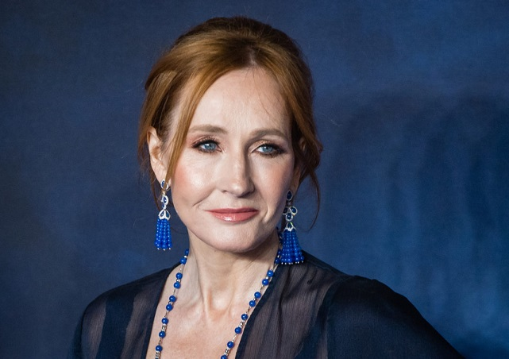

BC Liberals Internal Backlash - Not perverted enough
November 24th, 2020
CTV:
TDC_ARTICLE_START
VANCOUVER -- Andrew Wilkinson's leadership of the BC Liberals is under fire following a string of candidate controversies that have caused rising tensions within the free-enterprise coalition.
The party's membership chair criticized Wilkinson publicly on Thursday, writing on Twitter that the BC Liberal Party under his leadership "does not reflect values I support."
"We have a problem in the leadership of the party and their lack of willingness to stand up for diversity, inclusion and the values of BC Liberal members – not just the interests of a small group of constituents," Nicole Paul said.
TDC_ARTICLE_STOP

Nicole Paul, BC Liberal Party Member Chair
Oh boy, do I ever have a nice piece coming up on Nicole Paul. More to the point, I mean just look at this. You're going to fight the Donor-Left Party by what, out Donor-Left'ing them. You know it's times like these that I'm so happy I coined the term Donor-Side politics, because how the fuck could any rational person look at this and think "oh yeah, there's a side here that's working for me."

Finally we're getting a party standing up for Diversity
TDC_ARTICLE_START
"I will continue to advocate for an inclusive party that doesn't just talk the talk, but walks the walk. I'm looking forward to those discussions with members after this election."
Paul declined an interview with CTV News on Friday, but gave an email statement saying her intention isn't "destroying Andrew or the party – it is about getting back to what we stand for."
Her comments were posted hours after Chilliwack-Hope candidate Laurie Throness resigned from the Liberals amid backlash over his recent remarks comparing a policy of offering free contraceptives to eugenics.
TDC_ARTICLE_STOP
You'll notice a running theme here between this and the Albera United Cuckservative Party, if you read my Caylan Ford Series. The theme is "Donor-Right Puppets will collude with Donor-Left Puppets in order to remove peasant-right candidates who have slipped through the cracks." The purpose is basically to terrorize anyone not pushing the Jew-Corporate Line of "tranny good. Shitdick good. White Bad," etcetera.

Pictured: Donor Representative
TDC_ARTICLE_START
Paul said she's been fighting BC Liberal leadership behind closed doors for months, arguing that "the views of Laurie Throness do not belong in our party."
"I have advocated for many constructive courses of action that would help keep our coalition together. All of which have been completely ignored by the party leadership and in some instances, completely contradicted," she wrote.
TDC_ARTICLE_STOP
This bitch don't stop. But it's hard for me to add commentary, since I'm writing a seperate article about her.
TDC_ARTICLE_START
On Friday, the NDP raised concerns about another candidate in New Westminster, Lorraine Brett, who tweeted support for author J.K. Rowling's headline-making blog post on gender identity, which was widely viewed as an affront to transgender women.
"J.K Rowling's best work! Thank you," reads the now-deleted post.
Brett defended her remarks on Twitter Friday, while touting the BC Liberals' "unequivocal" support for the LGBTQ community.
"I think it's important to hear different ideas in a fair and open society," Brett said, adding that her party has "worked hard to advance an agenda that builds a better and more tolerant British Columbia."
The remarks rang hollow for some on the platform, including one user who called it "sickening" to suggest "the rights and safety of trans people are up for debate."
TDC_ARTICLE_STOP
JK Rowling, seconds before eviscerating a tranny.
I have to admit even I am a little thunderstruck that the Donor-Center is responding to "raised concerns from the NDP." Like, guys, they're the OTHER party. You can't let the goy-peasants know how obviously fake and gay this Donor Fight really is.
But no, I mean I just can't get over responding to some attack by the NDP with anything other than a "LOL go fuck yourself." Or maybe "look, the people who want to turn your kids into trannies don't like me, this is an endorsement." Again, I know this is all a set up puppet fight, but it's still such a bizarre out of body experience.
And then of course the Donor-Center party talks about how "no, we're the rEAl deFENderS of LgbTQ SexUAl PErveRTs." This is the classic "legitimize the attack," way of throwing the fight. You'll see this all the time when Donor-Left is attacked by Donor-Right on economics. "Oh he's just a SOciALisT." "No, no, it's not true. I love corporations and hate the little people too! You have to believe me!"
TDC_ARTICLE_START
Meanwhile, NDP Leader John Horgan, who remains way ahead of Wilkinson in the polls, capitalized on the controversies at his own campaign event Friday, calling on the BC Liberals to remove both Kunst and Brett from the party.
"Andrew Wilkinson can't claim there's no room for discrimination when continuing to tolerate hate in his own team of candidates. He needs to fire Margaret Kunst and Lorraine Brett today," Horgan said.
TDC_ARTICLE_STOP
Oh trust me, there's plenty of room for a political party that pushes the anti-pervert agenda.